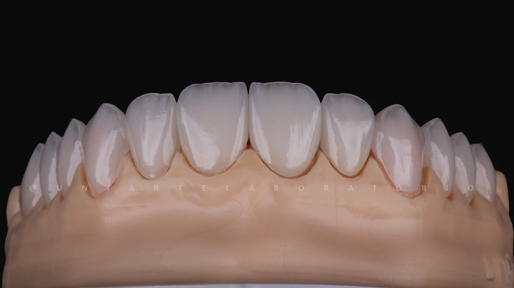
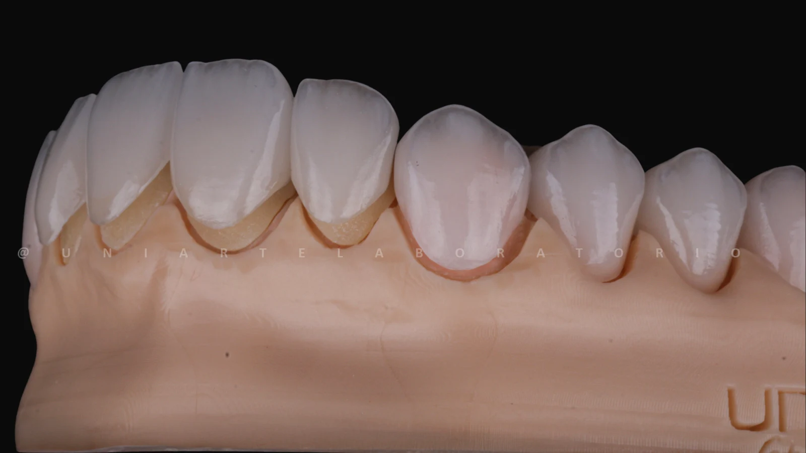
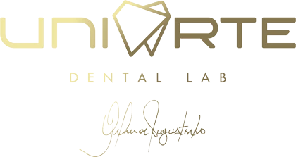

Proporções e desenho de cada peça.
Um sorriso.
Uma assinatura.
Lentes de contato em porcelana.
Um olhar para o que faz você ser você.

O seu sorriso começa com uma conversa.
Dra. Nelzi Aguiar · Laguna, SC
O detalhe
faz parte do todo.
A escolha das lentes envolve mais do que o branco. Forma, cor e textura entram na conversa sobre o seu sorriso.

Tonalidades e passagem da luz.
Detalhes de superfície e acabamento.
Estudo visual do material · fotografias oficiais da Uniarte · não representa resultado clínico
Muito prazer,
Nelzi Aguiar.
Um atendimento próximo.
Um planejamento individual.
Cirurgiã-dentista em Laguna, com atuação em lentes de contato em porcelana, harmonização orofacial e implantodontia.
Na sua apresentação profissional, a Dra. Nelzi destaca o atendimento humanizado, o cuidado em cada detalhe e as explicações claras sobre o tratamento.
“Estética sempre com naturalidade.”Da apresentação da Dra. Nelzi no InstagramConhecer sua apresentação
Um portfólio.
Muitas particularidades.
Cada caso tem um contexto. Aqui, os registros precisam contar a história inteira — sem promessas e sem transformar um resultado em regra.
Uma história
por vez.
Seleção de casos da Dra. Nelzi em curadoria para esta prévia.
DiagnósticoConclusão
As imagens serão inseridas após o recebimento dos casos e das autorizações correspondentes. Nenhum caso de terceiros ocupa este espaço.
O que acompanhar
em cada registro.
- O ponto de partida
- O contexto apresentado pela profissional.
- O planejamento
- As escolhas explicadas para aquele caso.
- A conclusão
- O registro final, com autoria e identificação.
Indicação, etapas e cuidados dependem da avaliação clínica. A galeria não substitui uma consulta.
A arte também
está na peça.
Uniarte Dental Lab, Goiânia.

O laboratório indicado pela equipe para esta apresentação produz lentes e facetas em porcelana para profissionais de odontologia.
As fotografias abaixo mostram peças sobre modelos do laboratório. Não são casos clínicos da Dra. Nelzi.
Antes da escolha,
uma boa conversa.
O que você gostaria de mudar? O que deseja preservar no seu sorriso? Essas perguntas são um começo para a avaliação.
Como saber se as lentes são indicadas para mim?
A indicação precisa ser definida em avaliação clínica. Conte à profissional suas expectativas e tire dúvidas sobre alternativas, etapas e cuidados.
Como pedir uma avaliação?
Converse pelo WhatsApp para consultar disponibilidade e combinar o atendimento. Comece pelo assunto geral, sem enviar documentos ou informações clínicas sensíveis.
O próximo detalhe
é a sua conversa.
Fale com a equipe da Dra. Nelzi sobre uma avaliação de lentes em porcelana.
Pedir uma avaliação Laguna, Santa Catarina · atendimento a combinar